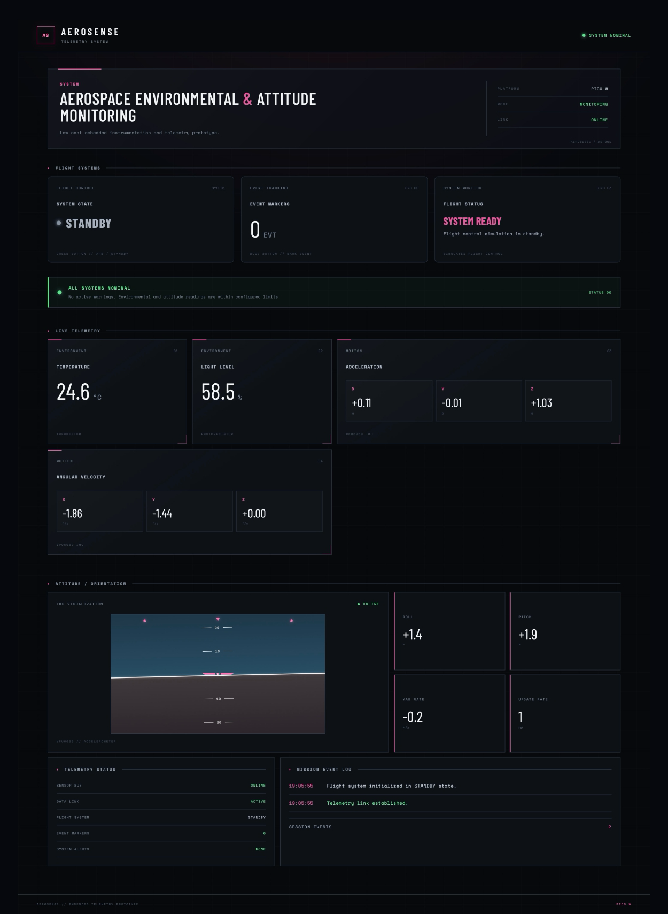
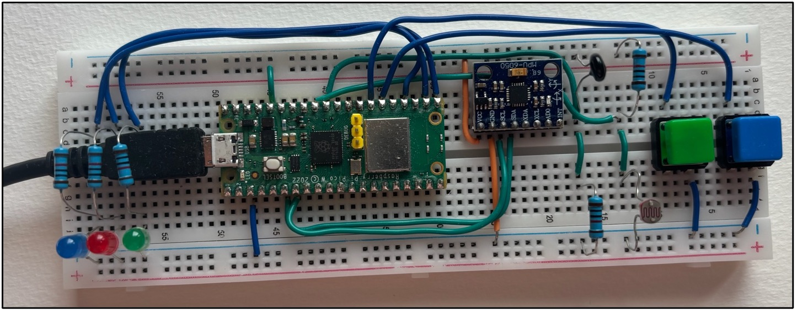
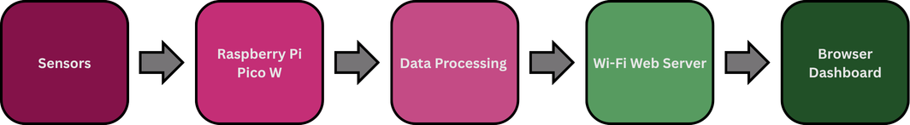
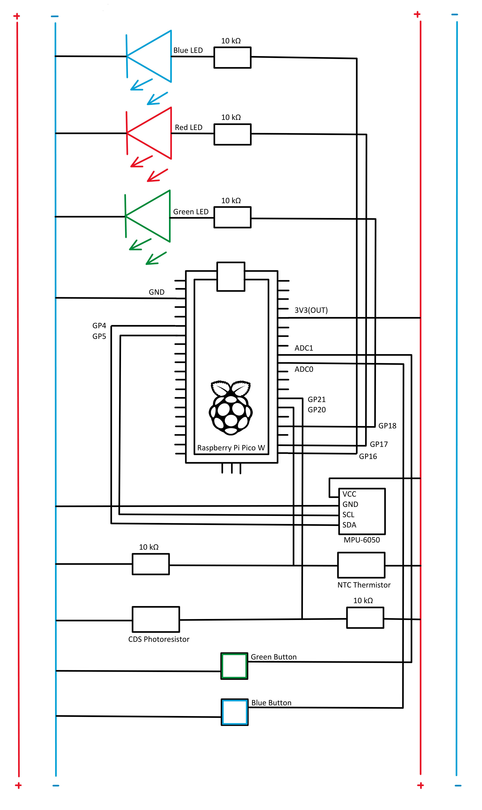

Hardware
- Raspberry Pi Pico W microcontroller
- MPU6050 inertial measurement unit
- Thermistor and photoresistor
- Push buttons and status LEDs
- Custom sensor wiring and integration
PERSONAL ENGINEERING PROJECT
An embedded instrumentation prototype that brings motion sensing and environmental measurements together in a live browser-based telemetry dashboard.


AeroSense was developed as a hands-on exploration of embedded sensing, telemetry, and interface design. A Raspberry Pi Pico W reads motion and environmental sensors, processes the measurements, and serves data to a browser-based dashboard over a local Wi-Fi network.
The dashboard updates at approximately one-second intervals and presents environmental measurements, motion and orientation estimates, warning states, and event information in a unified interface.
Integrated hardware and software, calibrated sensor readings, debugged data acquisition, and developed a responsive interface for interpreting telemetry.
The Pico W acquires and processes sensor readings, then provides a JSON endpoint. The browser retrieves the data and updates the dashboard without reloading the page.


The project folder contains the MicroPython firmware, browser dashboard files, hardware diagram, and supporting images. The full technical report documents the design, implementation, and testing.
Scope note: AeroSense is an educational prototype. Flight arming and event-marking functions are simulated; the system is not intended for operational aircraft use.